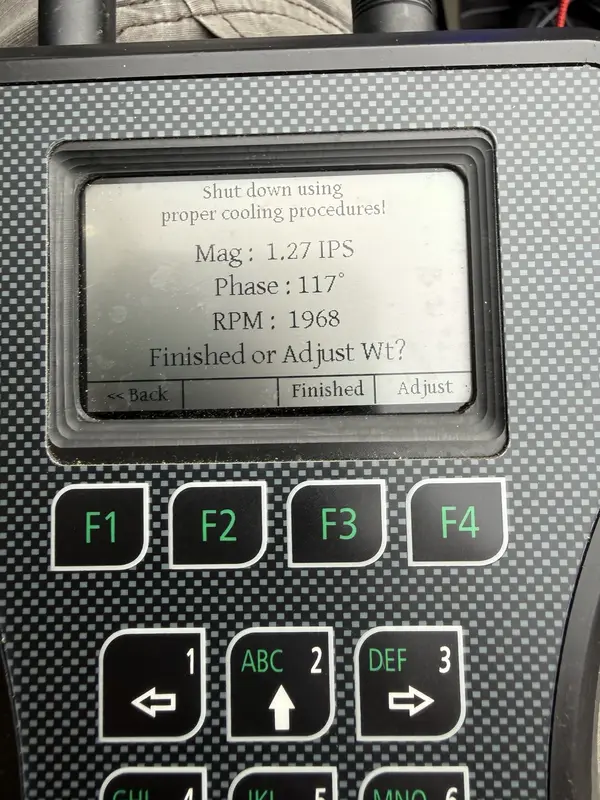
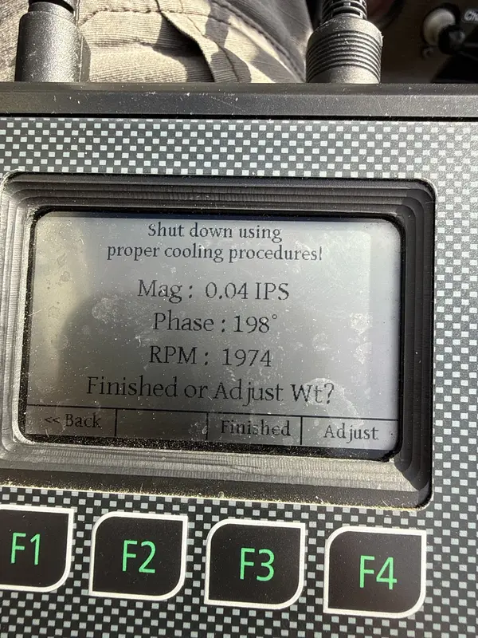
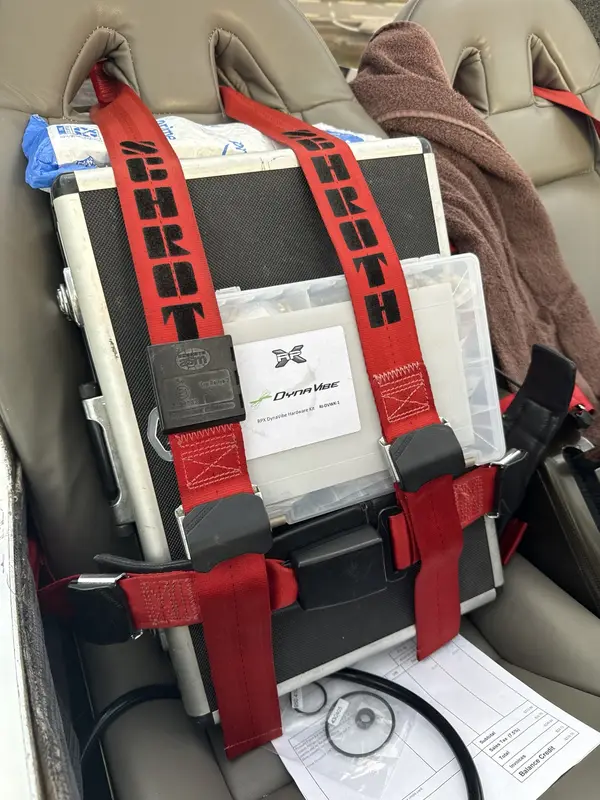
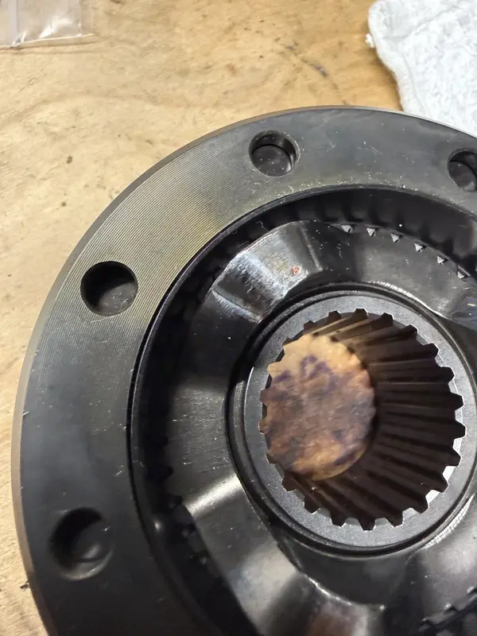
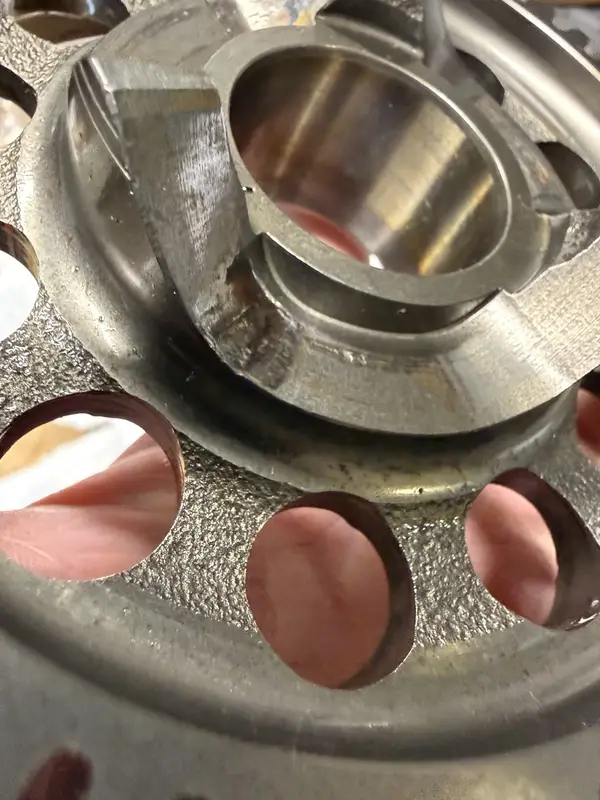
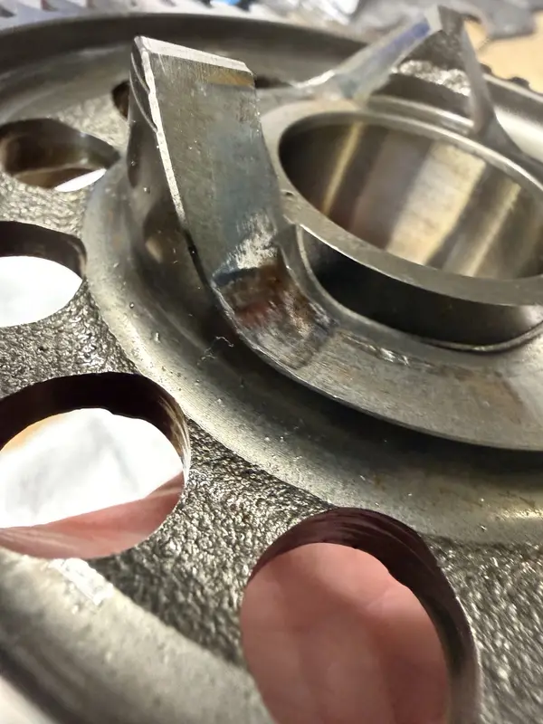

Gearbox / Propeller / Vibration
ROTAX Gearbox, Propeller Vibration & Balance Support
This page is for ROTAX gearbox chatter, propeller/vibration complaints, kickback history, shock loading, friction torque questions, or clutch-related concerns.
What You May Notice
Vibration Should Be Described by Condition.
- New or worsening vibration
- Gearbox chatter or unusual noise
- Kickback during start or shutdown
- Propeller balance or tracking concern
- History of prop strike, shock loading, or hard event
What It Can Involve
Gearbox and Propeller Context Must Be Separated Carefully.
- Gearbox inspection context and friction torque
- Propeller balance, pitch, tracking, and mounting
- Engine mount and airframe vibration paths
- Starting behavior, kickback, and shock-loading records
- Maintenance history and applicable ROTAX documents
Measured Vibration Evidence
A Useful Vibration Report Turns a Feeling into Comparable Data.
Dynamic measurements help establish the starting condition, guide controlled adjustment, and verify the result. The number is evidence, not a stand-alone diagnosis.



Gearbox Inspection Evidence
Wear Patterns Need Photographs, History, and the Applicable Inspection Path.
These close views preserve the observed pocket condition for comparison and records. They do not replace dimensional checks, current instructions, or an aircraft-specific maintenance decision.



Vibration Review Focus
Describe the Condition, Not Just the Feeling.
A vibration complaint should identify the RPM range, phase of operation, propeller model, recent prop or gearbox work, and whether start, shutdown, or kickback behavior changed. A propeller balance question, gearbox question, mount question, and airframe vibration path may feel similar to the owner.
Why It Matters
Gearbox and Propeller Clues Need Separation.
Pitch, tracking, mounting, balance, friction torque history, shock-loading records, and engine mount condition each tell a different story. The review keeps those clues organized so a maintenance plan does not start from a vague vibration description alone.
Propeller Documentation
Some Propeller Problems Need Records, Manufacturer Coordination, and Follow-through.
When the issue involves propeller damage, repair-return paperwork, E-PROPS support, aircraft-manufacturer questions, or post-installation vibration context, the work should stay traceable instead of becoming a simple parts swap.
Documented Propeller Repair Support
See how Lima Charlie Aero organizes E-PROPS selection, repair coordination, import/shipping documentation, installation planning, and vibration follow-up.
What Information Helps First
Describe When the Vibration Happens.
Start With the Facts
Send the Vibration Details and RPM Range.
Vibration concerns need a controlled starting point. Send the aircraft, propeller, RPM range, recent maintenance, and whether the symptom changed suddenly or gradually.
Send Aircraft Details